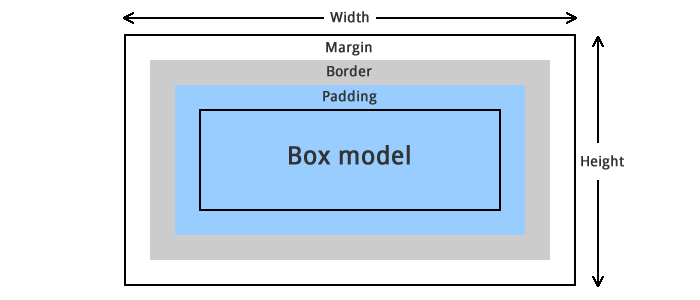

BOX MODEL
El nombre 'box-model' (modelo de caja) se llama así porque, en los navegadores, todo se construye a partir de cajas. Entonces, lo primero que debemos de entender, es que cada elemento que definimos en un documento HTML se mostrará en el navegador como una caja rectangular esta es la forma en que se representan todos los elementos, no existen elementos triangulares, redondos, poligonales etc. Todos los elementos en HTML por defecto son rectangulares ya que internamente el navegador dibuja un rectángulo..
Aunque usted visualice en un sitio web algún elemento diseñado en CSS que utiliza border-radius para parecer un círculo, ese elemento seguirá siendo rectangular y esto es porque como he dicho anteriormente cada elemento del diseño web es una caja, el navegador renderiza cada elemento de la página web como un elemento rectangular y con CSS nosotros definimos las propiedades como el tamaño, el color, los estilos, el margen y mucho más de estos elementos rectangulares. Esto puedes comprobarlo con el siguiente ejemplo, con ayuda de la propiedad outline, podemos ver todos los elementos de la pagina de inicio de Google de forma rectangular y esto lo puedes hacer con cualquier otro sitio web..
El nombre 'box-model' (modelo de caja) se llama así porque, en los navegadores, todo se construye a partir de cajas. Entonces, lo primero que debemos de entender, es que cada elemento que definimos en un documento HTML se mostrará en el navegador como una caja rectangular esta es la forma en que se representan todos los elementos, no existen elementos triangulares, redondos, poligonales etc. Todos los elementos en HTML por defecto son rectangulares ya que internamente el navegador dibuja un rectángulo..
Cajas de bloque (Block boxes) Las cajas de bloque, por defecto, ocupan todo el espacio a lo ancho del contenedor. El elemento HTML común para una caja de bloque es el elemento
 Internos:
content
padding
border
Externos
margin
Estas áreas se apilan para formar el modelo de caja o box model. Cada elemento HTML es una caja que podemos controlar en el espacio exterior con la propiedad margin, después, podemos darle un borde y con la propiedad padding, también podemos proporcionar los espacios interiores entre el contenido y el borde dentro de la caja.
Internos:
content
padding
border
Externos
margin
Estas áreas se apilan para formar el modelo de caja o box model. Cada elemento HTML es una caja que podemos controlar en el espacio exterior con la propiedad margin, después, podemos darle un borde y con la propiedad padding, también podemos proporcionar los espacios interiores entre el contenido y el borde dentro de la caja.
Content El contenido de la caja, donde aparecen texto, imágenes, etc. El área del content (como su nombre lo dice) contiene el “contenido” central a mostrar, es decir, un texto, una imagen, un video, etc. El contenido siempre es lo que queremos mostrarle al usuario. Esta área en muchas ocasiones tiene un color o imagen de fondo para hacerla más atractiva. Como podemos observar en la imagen, el contenido es el área central de todo el elemento, de tal forma, que el siguiente elemento que lo rodea es el padding. El tamaño de esta área se puede modificar con las propiedades height , width , max-height , max-width , min-height , min-width. Cuando se establece una anchura o una altura en un elemento, esto sólo se aplica al área de contenido (content) de la caja, no a la caja completa. El padding y border se añaden a la anchura y la altura para obtener el tamaño total de la caja, si quieres profundizar mas en este tema, te invito a leer mi articulo de box-sizing

Audios
Contenido de la sección de audios.
